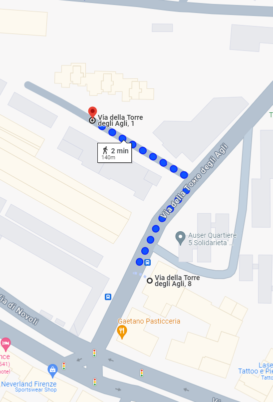

Getting to the apartment
Below you can find the information on how to get to the apartment. Please visit the Public Transport section for information about public transport and how to get to the city centre.
Notes
- The apartment is a 2-minute walk from the Novoli - Torre degli Agli tram stop, which is on the T2 tram line that links the Florence airport to the city centre and Santa Maria Novella train station.
- 10 minutes to the airport.
- 19 minutes to Santa Maria Novella train station.
- 19 minutes to the city center.
From Florence Airport
- Take Tram T2 from the Peretola Aeroporto tram stop, located just outside Amerigo Vespucci Airport, and head towards Unità. Get off at Novoli - Torre degli Agli, which is a 10-minute ride with trams running every 6 minutes. From the tram stop, it's a 2-minute walk to Via della Torre degli Agli, 8.


From Santa Maria Novella Train Station
- From the tram stop Unità, which is near Santa Maria Novella train station, take Tram T2 and get off at Novoli - Torre degli Agli tram stop. The tram ride is about 19 minutes with trams running every 6 minutes. From the tram stop, it's a 2-minute walk to Via della Torre degli Agli, 8.


From Pisa Airport
- From Pisa Airport, take the Pisa Mover located just outside on the left, and head towards the Pisa train station. Once you arrive at Pisa train station, take a train to the Florence Santa Maria Novella train station. This will take approximately 1 hour and 15 minutes.
- Alternatively, you can take a bus directly from the airport to Florence's central bus station, which is very close to Santa Maria Novella train station. This will take approximately 1 hour and 45 minutes.
- Once you arrive in Florence, take the Tram T2 line and get off at Novoli - Torre degli Agli, which is a 10-minute ride with trams running every 6 minutes. From the tram stop, it's a 2-minute walk to Via della Torre degli Agli, 8.
With the car
- Free public parking is available on Via della Torre degli Agli and surrounding streets. Please note that parking spaces are subject to availability and may be limited during peak hours. Always check for any parking restrictions or signs. Usually, you can find free parking in the parking spaces in front of the building at Via della Torre degli Agli, 1. 